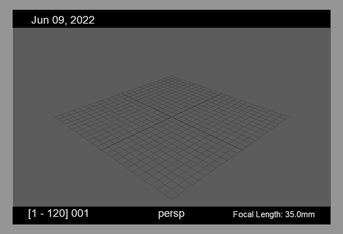
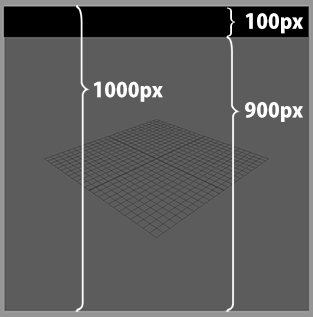

レターボックス¶
このページの目次:
概要¶
上下左右にレターボックスを表示させることができます
枠を表示する基準は、ResolutionGateになります

レターボックスの厚みは、RenderSettingsの解像度の値を基準に計算されます
例えば、高さ1000pxのResolutionGateの上部10%にレターボックスを表示させたい場合は、 Top アトリビュートを
100(px)に設定します
See also
『 Letterboxの設定方法 』で具体的な使い方を紹介しています。